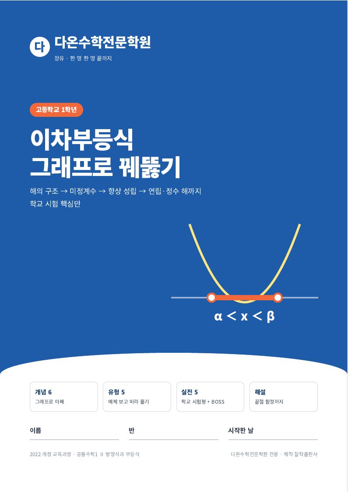
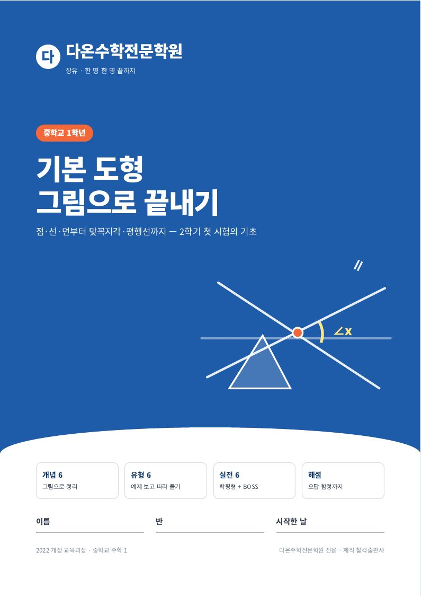

OUR CLASS
다온의 교실 이야기
공부만 하는 곳이 아니라, 한 해를 함께 보내는 곳이에요.
생일엔 작은 케이크한 명 한 명의 날을 기억해요
끝이 아닌 새로운 시작졸업과 진학을 함께 축하해요
방학 특강방학에도 공부 리듬을 지켜요
선생님과 약속스스로 정한 목표를 함께 지켜요
나만의 공부 비법을 찾아 주는 곳.
스스로 공부하는 습관까지 만들어 드려요.
모르는 곳을 그냥 넘기지 않아요. 아이가 '알았다'고 말할 때까지 차근차근.
숙제·오답 정리를 스스로 하게 만드는 것이 다온의 진짜 목표예요.
교재 검토 경험으로 아이 수준에 꼭 맞는 문제만 골라 풀게 해요.
학교별 시험 범위에 맞춘 보충 문제로 내신을 함께 챙겨요.
빨리 많이가 아니라, 한 계단씩 확실하게. 네 단계를 매 단원 반복해요.
공식을 외우기 전에, 왜 그런지 내 말로 설명해 봐요.
이해중등은 유형별 반복으로 실수를 없애요. 3번 풀고 체크해요.
중등 핵심고등은 단원과 단원을 잇는 힘. 개념끼리 연결해 처음 보는 문제를 풀어요.
고등 핵심틀린 문제는 오답 노트로. 다시 풀어 맞힐 때까지가 공부예요.
고득점스스로 공부하는 습관 — 오늘 할 분량, 오답 정리, 다음 시간 준비를 아이가 스스로 체크해요. 학부모님께는 수업 내용과 숙제를 정리해 알려 드려요.
학년과 수준에 맞춰 반을 나누고, 같은 반 안에서도 진도를 한 명씩 챙겨요.


공부만 하는 곳이 아니라, 한 해를 함께 보내는 곳이에요.